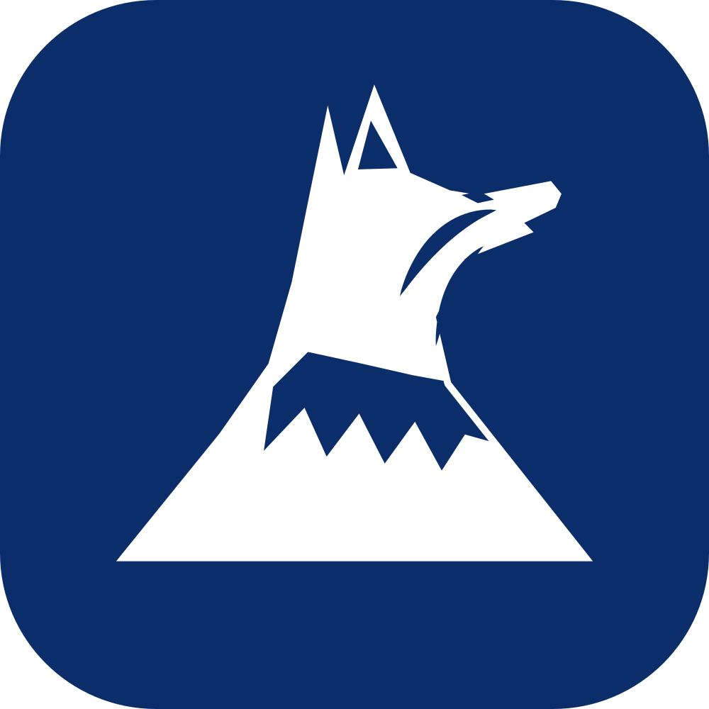

Header study
Current live mark
The placeholder currently served by Baltor.

Baltor Live Baltor ↗Logo study
The current mark and two existing husky directions at actual header and tab sizes. These are alternatives for review.
Header study
The placeholder currently served by Baltor.
Header study
A longer muzzle and upright neck, using the owner's latest direction.
Header study
Two broad shapes; fewer internal details at favicon size.
No logo is selected by this preview. Preserve the current live mark until the owner chooses a replacement and its light, dark and tiny versions pass visual review.